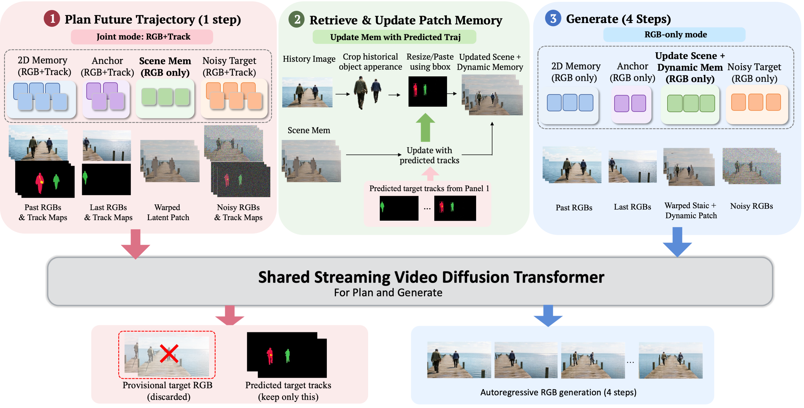

Long-horizon world generation requires models to both preserve past observations and reason about how the world evolves over time. Existing memory mechanisms are effective for recalling static scenes, but are less suited to dynamic entities whose future states must be inferred before historical information can be reused. We propose MotionMem, a unified plan–retrieve–generate framework that explicitly couples future-state prediction with memory retrieval. MotionMem jointly models RGB videos and instance-level track maps, predicting future trajectories with only a single denoising step as a lightweight motion plan, which is then used to retrieve and align relevant historical appearance for subsequent RGB generation. Trajectory-Guided Dynamic Memory uses the predicted motion to retrieve and place historical object appearance alongside camera-aligned scene memory. We further distill MotionMem into a causal few-step streaming generator for efficient interactive generation. Experiments demonstrate improved long-term consistency in both scene recall and dynamic evolution, while preserving these advantages under real-time streaming generation.

One shared video diffusion transformer handles both planning and generation. The first denoising step runs in joint RGB–trajectory mode and predicts where each instance will be; the provisional RGB frame from that step is discarded. Predicted tracks then crop historical object appearance, resize it to the future location, and composite it with camera-warped scene memory. The remaining four denoising steps generate RGB only, conditioned on this updated memory. The loop runs online as the model is distilled into a causal few-step streaming generator.
The camera pans away as the subject leaves, then returns; the same subject should re-enter farther along its path. HyDRA introduces artifacts, WorldDirector tends toward rigid translation, LiveWorld can fuse inconsistent views, and the streaming baselines either drift or freeze the subject. MotionMem continues the motion and keeps the identity.
MBench measures dynamic memory with VQA scores: the camera turns in place so subjects leave and later re-enter. WBench measures general world-generation quality. AR is the causal streaming model and BI is the bidirectional model. Higher is better. MotionMem rows are highlighted, and the best result in each column is in bold.
| Method | Avg. | Instruction | Identity | Background | Number |
|---|---|---|---|---|---|
| Bidirectional | |||||
| HyDRA (1.3B) | 3.42 | 2.04 | 0.93 | 0.00 | 10.71 |
| LiveWorld (14B) | 78.64 | 82.65 | 87.04 | 91.30 | 53.57 |
| WorldDirector (14B) | 89.15 | 92.86 | 94.44 | 80.00 | 89.29 |
| Streaming | |||||
| Matrix-Game 3.5 (5B) | 73.61 | 85.71 | 91.67 | 29.57 | 87.50 |
| WorldPlay (8B) | 90.15 | 75.51 | 99.07 | 89.57 | 96.43 |
| MotionMem (5B) | 96.53 | 88.78 | 100.00 | 99.13 | 98.21 |
| Method | Avg. | Quality | Setting | Interaction | Consistency | Physical |
|---|---|---|---|---|---|---|
| Bidirectional | ||||||
| HyDRA (1.3B) | 50.64 | 61.20 | 43.60 | 46.60 | 72.80 | 29.00 |
| LiveWorld (14B) | 70.96 | 72.60 | 74.00 | 70.20 | 81.00 | 57.00 |
| WorldDirector (14B) | 69.68 | 69.00 | 63.60 | 72.80 | 87.00 | 56.00 |
| Streaming | ||||||
| Matrix-Game 3.5 (5B) | 68.32 | 70.60 | 65.00 | 66.60 | 79.00 | 60.40 |
| WorldPlay (8B) | 73.44 | 71.40 | 65.20 | 74.00 | 87.20 | 69.40 |
| MotionMem (5B) | 75.96 | 74.20 | 65.20 | 77.60 | 89.80 | 73.00 |
The camera swings so that content leaves the frame and later comes back. MBench stresses dynamic subjects that should keep their identity and count. The first-person clips stress the same turn on scene layout.
The same camera path is generated twice. Pass 1 writes the observed scene into memory. Pass 2 runs again with that memory, so previously seen content is recalled instead of invented.
Scene 1 · Pass 1
Scene 1 · Pass 2
Scene 2 · Pass 1
Scene 2 · Pass 2
The camera turns a full circle, to the left or to the right, in third-person and first-person settings. Layout seen at the start should still match when the view comes back around.